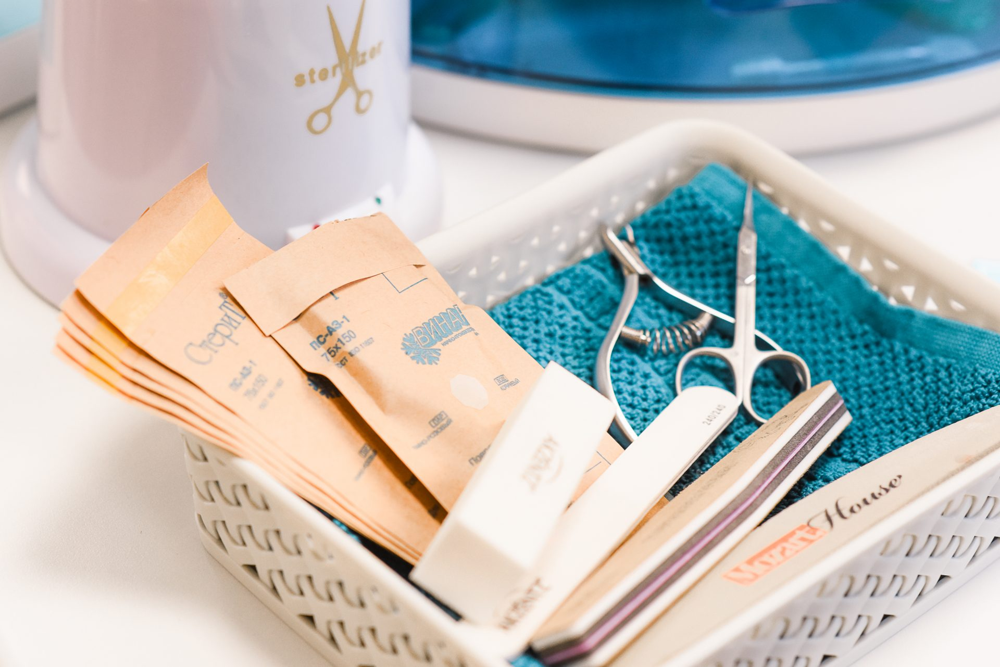

СанПиН дезинфекция, обработка инструментов
Перед применением инструмента необходимо добиться его стерильности. В соответствии с СанПиНом первым этапом должен быть промыв инструмента под проточной водой. Вторым этапом является просушка. Далее необходимо опустить инструмент в дезинфицирующий раствор, развести такой раствор необходимо в соотвествии с инструкцией на официальном сайте производителя, выдержать и повторно просушить инструмент. Поместите инструмент в крафт-пакет и оставьте в стерилизаторе на 1 час при температуре 180 градусов.
